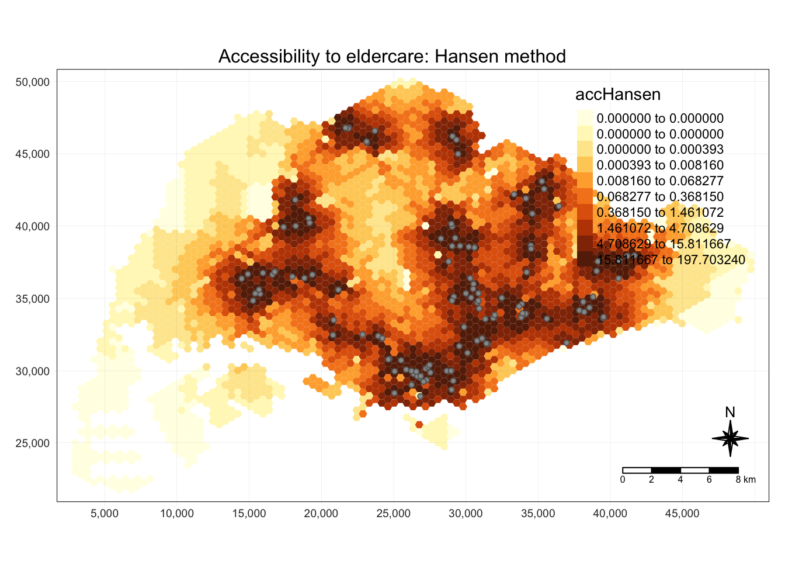
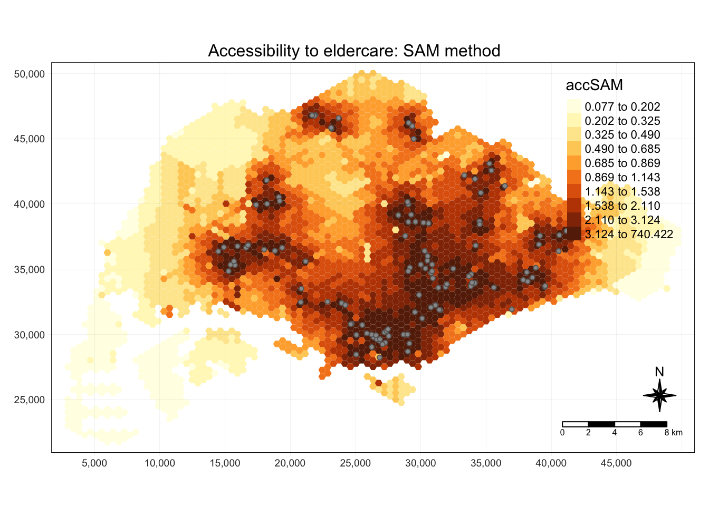
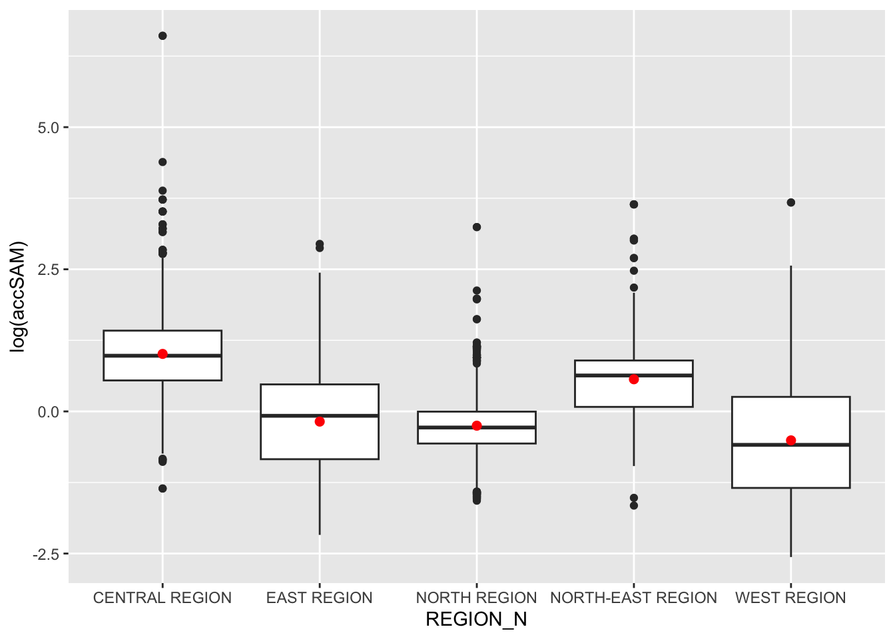

pacman::p_load(tmap, SpatialAcc, sf, ggstatsplot, reshape2, tidyverse)Hands-on Ex 10
Modelling Geographical Accessibility
1. Overview
Geographical accessibility refers to how easily people can reach activities like work, shopping, or healthcare from a given location. It involves measuring the ease or difficulty of accessing facilities based on factors such as distance, time, and travel barriers. At its core, modelling accessibility is about quantifying movement opportunities, focusing on calculating the distance, time, or cost required to travel between locations. Geographical accessibility models can help answer questions such as:
- Which regions lack access to essential facilities?
- Which areas will be impacted by public policies, such as school closures?
In this exercise, we will model accessibility using the following three methods:
- Hansen’s Potential Model: This model estimates accessibility by summing the weighted opportunities available at various locations, with weights decreasing as the travel distance or time increases. It reflects the ease with which individuals can reach services based on proximity.
- Kernel Density Two-step Floating Catchment Area (KD2SFCA): KD2SFCA refines traditional floating catchment models by incorporating a kernel density function, which accounts for the gradual decay of accessibility over distance. It evaluates access by considering both service supply and population demand across multiple zones.
- Spatial Accessibility Measure (SAM): SAM quantifies the relative ease or difficulty of accessing facilities, integrating both distance and capacity constraints. It provides a spatially-aware measure of accessibility, capturing variations in service availability across regions.
The following R packages are used, with the SpatialAcc package playing a key role in modelling geographical accessibility.
2. Importing & Preparing Data
We will import and work with four datasets:
- URA’s 2014 Master Plan Subzone Boundaries
- Hexagons Dataset: 250m radius hexagons generated using
st_make_grid()from thesfpackage - Eldercare Service Locations from data.gov.sg
- Distance Matrix: CSV file with distances between hexagons and eldercare locations
Note that the mpsz sf dataframe does not have any EPSG information, and we will need to update its EPSG code later on.
mpsz <- st_read(dsn = "data/geospatial", layer = "MP14_SUBZONE_NO_SEA_PL")Reading layer `MP14_SUBZONE_NO_SEA_PL' from data source
`/Users/stephentay/stephentay/ISSS626-Geospatial-Analytics/Hands-on_Ex/Hands-on_Ex10/data/geospatial'
using driver `ESRI Shapefile'
Simple feature collection with 323 features and 15 fields
Geometry type: MULTIPOLYGON
Dimension: XY
Bounding box: xmin: 2667.538 ymin: 15748.72 xmax: 56396.44 ymax: 50256.33
Projected CRS: SVY21hexagons <- st_read(dsn = "data/geospatial", layer = "hexagons") Reading layer `hexagons' from data source
`/Users/stephentay/stephentay/ISSS626-Geospatial-Analytics/Hands-on_Ex/Hands-on_Ex10/data/geospatial'
using driver `ESRI Shapefile'
Simple feature collection with 3125 features and 6 fields
Geometry type: POLYGON
Dimension: XY
Bounding box: xmin: 2667.538 ymin: 21506.33 xmax: 50010.26 ymax: 50256.33
Projected CRS: SVY21 / Singapore TMeldercare <- st_read(dsn = "data/geospatial", layer = "ELDERCARE") Reading layer `ELDERCARE' from data source
`/Users/stephentay/stephentay/ISSS626-Geospatial-Analytics/Hands-on_Ex/Hands-on_Ex10/data/geospatial'
using driver `ESRI Shapefile'
Simple feature collection with 120 features and 19 fields
Geometry type: POINT
Dimension: XY
Bounding box: xmin: 14481.92 ymin: 28218.43 xmax: 41665.14 ymax: 46804.9
Projected CRS: SVY21 / Singapore TMSince the mpsz sf dataframe does not have any EPSG information, we use st_transform to update its EPSG code.
mpsz <- st_transform(mpsz, 3414)
eldercare <- st_transform(eldercare, 3414)
hexagons <- st_transform(hexagons, 3414)st_crs(mpsz)Coordinate Reference System:
User input: EPSG:3414
wkt:
PROJCRS["SVY21 / Singapore TM",
BASEGEOGCRS["SVY21",
DATUM["SVY21",
ELLIPSOID["WGS 84",6378137,298.257223563,
LENGTHUNIT["metre",1]]],
PRIMEM["Greenwich",0,
ANGLEUNIT["degree",0.0174532925199433]],
ID["EPSG",4757]],
CONVERSION["Singapore Transverse Mercator",
METHOD["Transverse Mercator",
ID["EPSG",9807]],
PARAMETER["Latitude of natural origin",1.36666666666667,
ANGLEUNIT["degree",0.0174532925199433],
ID["EPSG",8801]],
PARAMETER["Longitude of natural origin",103.833333333333,
ANGLEUNIT["degree",0.0174532925199433],
ID["EPSG",8802]],
PARAMETER["Scale factor at natural origin",1,
SCALEUNIT["unity",1],
ID["EPSG",8805]],
PARAMETER["False easting",28001.642,
LENGTHUNIT["metre",1],
ID["EPSG",8806]],
PARAMETER["False northing",38744.572,
LENGTHUNIT["metre",1],
ID["EPSG",8807]]],
CS[Cartesian,2],
AXIS["northing (N)",north,
ORDER[1],
LENGTHUNIT["metre",1]],
AXIS["easting (E)",east,
ORDER[2],
LENGTHUNIT["metre",1]],
USAGE[
SCOPE["Cadastre, engineering survey, topographic mapping."],
AREA["Singapore - onshore and offshore."],
BBOX[1.13,103.59,1.47,104.07]],
ID["EPSG",3414]]We select the relevant fields from the eldercare and hexagons datasets for the subsequent analysis. Using the mutate() function from the dplyr package, we add two new fields:
- Demand in the hexagons dataset
- Capacity in the eldercare dataset
Both fields are initially assigned a constant value of 100. However, in practice, these values should represent the actual demand of each hexagon and the true capacity of each eldercare center.
hexagons <- hexagons %>%
select(fid) %>%
mutate(demand = 100)
eldercare <- eldercare %>%
select(fid, ADDRESSPOS) %>%
mutate(capacity = 100)The original dataset is in long format, and we need to convert it to wide format, with rows representing the origins and columns representing the destinations.
ODMatrix <- read_csv("data/aspatial/OD_Matrix.csv", skip = 0)Rows: 375000 Columns: 6
── Column specification ────────────────────────────────────────────────────────
Delimiter: ","
dbl (6): origin_id, destination_id, entry_cost, network_cost, exit_cost, tot...
ℹ Use `spec()` to retrieve the full column specification for this data.
ℹ Specify the column types or set `show_col_types = FALSE` to quiet this message.glimpse(ODMatrix)Rows: 375,000
Columns: 6
$ origin_id <dbl> 1, 1, 1, 1, 1, 1, 1, 1, 1, 1, 1, 1, 1, 1, 1, 1, 1, 1, 1…
$ destination_id <dbl> 1, 2, 3, 4, 5, 6, 8, 9, 10, 11, 12, 13, 14, 15, 16, 18,…
$ entry_cost <dbl> 667.9336, 667.9336, 667.9336, 667.9336, 667.9336, 667.9…
$ network_cost <dbl> 19846.87, 45026.76, 17644.17, 36009.56, 31068.09, 31194…
$ exit_cost <dbl> 47.64874, 31.87162, 173.47882, 92.19676, 64.62840, 117.…
$ total_cost <dbl> 20562.45, 45726.57, 18485.58, 36769.69, 31800.65, 31979…To convert the dataset from long to wide format, we use the spread() function. Additionally, we convert the distance metric from meters to kilometers and transform the dataset into a matrix.
distmat <- ODMatrix %>%
select(origin_id, destination_id, total_cost) %>%
spread(destination_id, total_cost)%>%
select(c(-c('origin_id')))
head(distmat)# A tibble: 6 × 120
`1` `2` `3` `4` `5` `6` `8` `9` `10` `11` `12`
<dbl> <dbl> <dbl> <dbl> <dbl> <dbl> <dbl> <dbl> <dbl> <dbl> <dbl>
1 20562. 45727. 18486. 36770. 31801. 31980. 33198. 22963. 45943. 35593. 36362.
2 23069. 48233. 20992. 39276. 34307. 34486. 35704. 25469. 48450. 38100. 38869.
3 23590. 48754. 21513. 39797. 34828. 35007. 36225. 25991. 48971. 38621. 39390.
4 24069. 49233. 21992. 40276. 35307. 35486. 36705. 26470. 49450. 39100. 39869.
5 24241. 49405. 22164. 40448. 35479. 35658. 36877. 26642. 49622. 39272. 40041.
6 24605. 49769. 22528. 40812. 35843. 36022. 37241. 27006. 49986. 39636. 40405.
# ℹ 109 more variables: `13` <dbl>, `14` <dbl>, `15` <dbl>, `16` <dbl>,
# `18` <dbl>, `19` <dbl>, `20` <dbl>, `21` <dbl>, `22` <dbl>, `23` <dbl>,
# `24` <dbl>, `25` <dbl>, `26` <dbl>, `27` <dbl>, `28` <dbl>, `29` <dbl>,
# `30` <dbl>, `31` <dbl>, `32` <dbl>, `33` <dbl>, `34` <dbl>, `35` <dbl>,
# `36` <dbl>, `37` <dbl>, `38` <dbl>, `39` <dbl>, `40` <dbl>, `41` <dbl>,
# `42` <dbl>, `43` <dbl>, `44` <dbl>, `45` <dbl>, `46` <dbl>, `47` <dbl>,
# `48` <dbl>, `49` <dbl>, `50` <dbl>, `52` <dbl>, `53` <dbl>, `55` <dbl>, …distmat_km <- as.matrix(distmat/1000)3. Modelling Accessibility using Hansen’s Method
Hansen’s accessibility is calculated using the ac() function from the SpatialAcc package. The result is then converted to a dataframe, with the default column renamed to accHansen and converted into a tibble dataframe.
acc_Hansen <- data.frame(ac(hexagons$demand,
eldercare$capacity,
distmat_km,
#d0 = 50,
power = 2,
family = "Hansen"))
colnames(acc_Hansen) <- "accHansen"
acc_Hansen <- as_tibble(acc_Hansen)
glimpse(acc_Hansen)Rows: 3,125
Columns: 1
$ accHansen <dbl> 1.648313e-14, 1.096143e-16, 3.865857e-17, 1.482856e-17, 1.05…acc_Hansen dataset is then joined to the hexagons sf dataframe using bind_cols(). hexagon_Hansen is now a sf dataframe.
hexagon_Hansen <- bind_cols(hexagons, acc_Hansen)
glimpse(hexagon_Hansen)Rows: 3,125
Columns: 4
$ fid <dbl> 1, 2, 3, 4, 5, 6, 7, 8, 9, 10, 11, 12, 13, 14, 15, 16, 17, 1…
$ demand <dbl> 100, 100, 100, 100, 100, 100, 100, 100, 100, 100, 100, 100, …
$ accHansen <dbl> 1.648313e-14, 1.096143e-16, 3.865857e-17, 1.482856e-17, 1.05…
$ geometry <POLYGON [m]> POLYGON ((2667.538 27506.33..., POLYGON ((2667.538 2…The code chunk below visualizes Hansen’s accessibility to eldercare facilities in Singapore. Before plotting, extract the extent of the hexagons sf dataframe using the st_bbox() function from the sf package.
Code
mapex <- st_bbox(hexagons)
tmap_mode("plot")tmap mode set to plottingCode
tm_shape(hexagon_Hansen,
bbox = mapex) +
tm_fill(col = "accHansen",
n = 10,
style = "quantile",
border.col = "black",
border.lwd = 1) +
tm_shape(eldercare) +
tm_symbols(size = 0.1) +
tm_layout(main.title = "Accessibility to eldercare: Hansen method",
main.title.position = "center",
main.title.size = 1,
legend.outside = FALSE,
legend.height = 0.45,
legend.width = 3.0,
legend.format = list(digits = 6),
legend.position = c("right", "top"),
frame = TRUE) +
tm_compass(type="8star", size = 2) +
tm_scale_bar(width = 0.15) +
tm_grid(lwd = 0.1, alpha = 0.5)
Next, we will compare the distribution of Hansen’s accessibility values across URA Planning Regions. First, we add the planning region field to the hexagon_Hansen sf dataframe using the code chunk below. This will allow us to visualise the distribution of Hansen’s accessibility across the Planning Regions.
hexagon_Hansen <- st_join(hexagon_Hansen, mpsz,
join = st_intersects)ggplot(data = hexagon_Hansen,
aes(y = log(accHansen), x= REGION_N)) +
geom_boxplot() +
geom_point(stat = "summary",
fun = "mean",
colour = "red",
size = 2)
4. Modelling Accessibility using KD2SFCA Method
The code for computing KD2SFCA accessibility is similar to that of Hansen’s accessibility, with the key difference being the use of “KD2SFCA” in the family argument.
acc_KD2SFCA <- data.frame(ac(hexagons$demand,
eldercare$capacity,
distmat_km,
d0 = 50,
power = 2,
family = "KD2SFCA"))
colnames(acc_KD2SFCA) <- "accKD2SFCA"
acc_KD2SFCA <- as_tibble(acc_KD2SFCA)
hexagon_KD2SFCA <- bind_cols(hexagons, acc_KD2SFCA)The code chunk below visualizes KD2SFCA accessibility to eldercare facilities in Singapore. mapex which contains the extent of the hexagons sf dataframe is used in the bbox argument.
Code
tmap_mode("plot")tmap mode set to plottingCode
tm_shape(hexagon_KD2SFCA,
bbox = mapex) +
tm_fill(col = "accKD2SFCA",
n = 10,
style = "quantile",
border.col = "black",
border.lwd = 1) +
tm_shape(eldercare) +
tm_symbols(size = 0.1) +
tm_layout(main.title = "Accessibility to eldercare: KD2SFCA method",
main.title.position = "center",
main.title.size = 1,
legend.outside = FALSE,
legend.height = 0.45,
legend.width = 3.0,
legend.format = list(digits = 6),
legend.position = c("right", "top"),
frame = TRUE) +
tm_compass(type="8star", size = 2) +
tm_scale_bar(width = 0.15) +
tm_grid(lwd = 0.1, alpha = 0.5)Here we compare the distribution of KD2CFA accessibility values across URA Planning Regions. We first add the planning region field to the hexagon_KD2SFCA sf dataframe, before visualising the distribution of KD2CFA accessibility across the Planning Regions.
hexagon_KD2SFCA <- st_join(hexagon_KD2SFCA, mpsz,
join = st_intersects)ggplot(data = hexagon_KD2SFCA,
aes(y = accKD2SFCA, x = REGION_N)) +
geom_boxplot() +
geom_point(stat = "summary",
fun = "mean",
colour = "red",
size=2)
5. Modelling Accessibility using Spatial Accessibility Measure (SAM) Method
To compute SAM accessibility, we use “SAM” in the family argument.
acc_SAM <- data.frame(ac(hexagons$demand,
eldercare$capacity,
distmat_km,
d0 = 50,
power = 2,
family = "SAM"))
colnames(acc_SAM) <- "accSAM"
acc_SAM <- as_tibble(acc_SAM)
hexagon_SAM <- bind_cols(hexagons, acc_SAM)The plot below visualizes SAM accessibility to eldercare facilities in Singapore. Similarly, mapex which contains the extent of the hexagons sf dataframe is used in the bbox argument.
Code
tmap_mode("plot")tmap mode set to plottingCode
tm_shape(hexagon_SAM,
bbox = mapex) +
tm_fill(col = "accSAM",
n = 10,
style = "quantile",
border.col = "black",
border.lwd = 1) +
tm_shape(eldercare) +
tm_symbols(size = 0.1) +
tm_layout(main.title = "Accessibility to eldercare: SAM method",
main.title.position = "center",
main.title.size = 1,
legend.outside = FALSE,
legend.height = 0.45,
legend.width = 3.0,
legend.format = list(digits = 3),
legend.position = c("right", "top"),
frame = TRUE) +
tm_compass(type="8star", size = 2) +
tm_scale_bar(width = 0.15) +
tm_grid(lwd = 0.1, alpha = 0.5)
We compare the distribution of SAM accessibility values across URA Planning Regions by first adding the planning region field to the hexagon_SAM sf dataframe. Once this field is added, we visualise the distribution of SAM accessibility across the Planning Regions.
hexagon_SAM <- st_join(hexagon_SAM, mpsz,
join = st_intersects)ggplot(data = hexagon_SAM,
aes(y = log(accSAM), x = REGION_N)) +
geom_boxplot() +
geom_point(stat = "summary",
fun = "mean",
colour = "red",
size = 2)